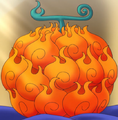
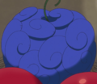

Frutas Akuma no Mi
As Akuma no Mi são frutas misteriosas e especiais espalhadas por todo o mundo, conhecidas por conceder aos seus consumidores poderes sobre-humanos permanentes, bem como uma incapacidade permanente de nadar. Como um todo, as Akuma no Mi abrangem centenas de poderes diferentes, desde os simples até os capazes de destruição em massa. Elas são amplamente agrupadas em três categorias: Paramecia, Logia e Zoan.
Paramecia
O mais comum dos três tipos de Akuma no Mi, as Akuma no Mi do tipo Paramecia concedem a seus usuários poderes sobre-humanos que não envolvem animais ou transformações elementais; poderes como geração de ondas de choque ou tornar pessoas tocadas em alvos que atraem objetos. Frutas do tipo Paramecia podem alterar características do corpo do usuário, como conceder um físico de borracha ou um corpo de lâminas. Algumas frutas Paramecia permitem ao usuário modificar as pessoas, objetos e ambiente ao seu redor, como fazendo coisas levitarem ou transformando pessoas em brinquedos. Além disso, existem alguns usuários que podem gerar e manipular substâncias, como cera e veneno.
- Gomo Gomo no Mi
- Bara Bara no Mi
- Sube Sube no Mi
- Bomu Bomu no Mi
- Kiro Kiro no Mi
- Hana Hana no Mi
 Doru Doru no Mi
Doru Doru no Mi Baku Baku no Mi
Baku Baku no Mi- Ito Ito no Mi
 Awa Awa no Mi
Awa Awa no Mi Yomi Yomi no Mi
Yomi Yomi no Mi- Kage Kage no Mi
- Jiki Jiki no Mi
- Ope Ope no Mi
- Fude Fude no Mi
- Goru Goru no Mi
 Biju Biju no Mi
Biju Biju no Mi- Gasha Gasha no Mi
Logia
O tipo mais raro e poderoso das Akuma no Mi, as Akuma no Mi do tipo Logia permitem que seus usuários criem, controlem e transformem seu corpo em um elemento natural, como gelo, lama, fumaça, fogo ou escuridão. A transformação elementar torna o usuário efetivamente intangível, além de permitir que o usuário permaneça no controle de seu corpo, mesmo quando ele é quebrado em pedaços. Eles também ganham todas as habilidades relacionadas a esse elemento; alguém com poderes de areia pode absorver a umidade ao redor, e com poderes de relâmpago, o usuário pode viajar através de objetos condutores.
- Moku Moku no Mi
- Suna Suna no Mi
-  Mera Mera no Mi
- Yomi Yomi no Mi
Zoan
Os usuários de Akuma no Mi do tipo Zoan ganham a habilidade de se transformar em um animal, bem como em uma forma híbrida entre o animal e a sua própria espécie. Uma descoberta científica recente permite que as frutas Zoan sejam integradas a objetos inanimados, dando-lhes vida e concedendo-lhes as transformações comuns de uma Zoan. Frutas Zoan de animais carnívoros são mais adequadas para o combate. As frutas Zoan possuem várias subclassificações, sendo elas:
Zoan Ancestral
Frutas Zoan que permitem ao usuário se transformar em uma espécie já extinta, como em algum dinossauro. As Zoan Ancestrais são raras, e parecem ser mais fortes do que as Zoan normais. Na tradução oficial da Panini, é chamada de Zoon Pré-Histórico.
Zoan Mítica
Frutas Zoan que permitem ao usuário se transformar em criaturas mitológicas, como um dragão ou uma fênix. Frutas Zoan de animais míticos tendem a ter poderes especiais; por exemplo. a Zoan da fênix permite ao usuário gerar chamas com poderes de cura, e a Zoan de um lobo divino permite gerar o elemento gelo. As Zoan Míticas são o tipo mais raro de Akuma no Mi, ainda mais raras do que as Logia. Na tradução oficial da Panini, é chamada de Zoon Mitológico.
Zoan Artificial
Frutas Zoan criadas artificialmente, que fornecem ao usuário uma característica animal permanente, embora, em casos muito raros, o usuário seja capaz de controlar a transformação. As frutas Zoan Artificiais possuem uma taxa de sucesso de apenas 10%, enquanto os outros 90%, além de não ganharem nenhum traço animal, perdem a capacidade de nadar, e deixam de conseguir expressar emoções negativas, ficando permanentemente em um estado de sorriso. As frutas artificiais foram desenvolvidas por Vegapunk e Donquixote Doflamingo.
 Ushi Ushi no Mi, Modelo: Bisão
Ushi Ushi no Mi, Modelo: Bisão- Hito Hito no Mi
 Ushi Ushi no Mi, Modelo: Girafa
Ushi Ushi no Mi, Modelo: Girafa-  Sara Sara no Mi, Modelo: Axolote
- Akuma no Mi Artificial de Vegapunk
- SMILE do Caesar
- Hebi Hebi no Mi, Modelo: Yamata no Orochi
- Batto Batto no Mi, Modelo: Vampiro ≠
- Tori Tori no Mi, Modelo: Nue ≠
Existem Akuma no Mi com classes indeterminadas:
Canônicas
- A Akuma no Mi não nomeada de Laffitte, que permite que ele crie asas angelicais e as utilize para voar.
- A Akuma no Mi não nomeada de Karasu, que lhe permite transformar seu corpo e roupas em uma revoada de corvos.
Não-Canônicas
- Meta Meta no Mi: Permite ao usuário controlar metal líquido, tornando-o um Homem-Metal Líquido (液体金属人間 Ekitai Kinzoku Ningen). Foi comida por Graydle.
- Zuma Zuma no Mi: Permite ao usuário controlar plasma, tornando-o um Homem-Plasma (プラズマ人間 Purazuma Ningen). Foi comida por Smash.